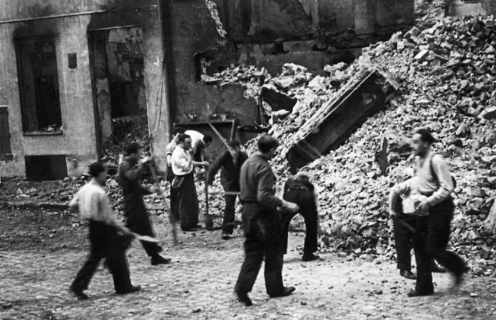
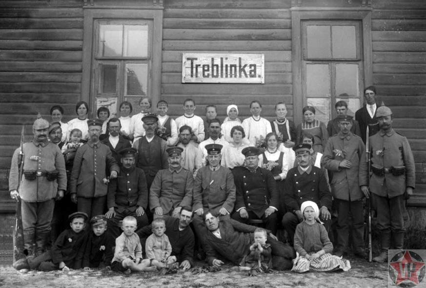
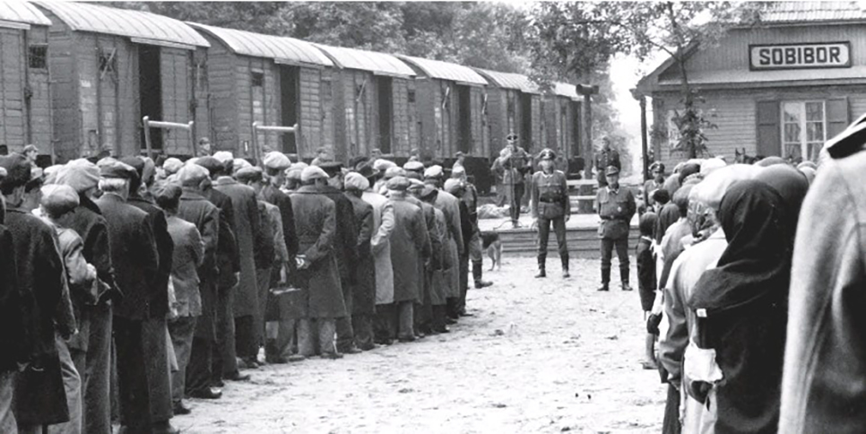
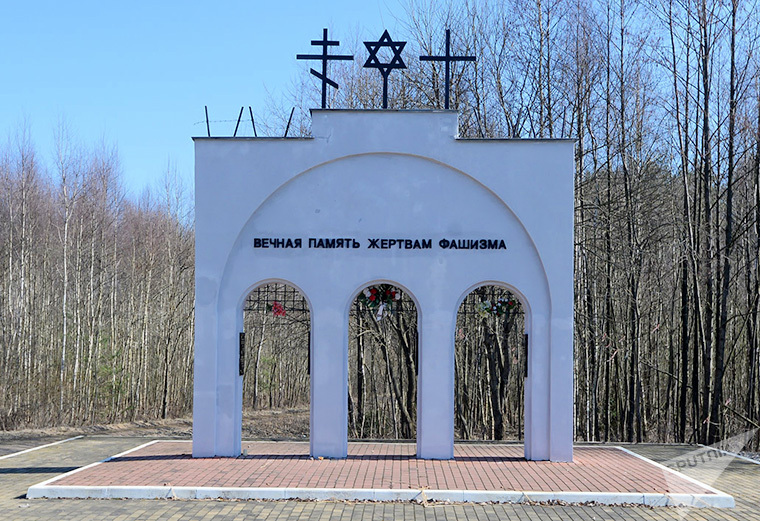

Описание лагерей смерти
Лагеря смерти — это лагеря, созданные исключительно для того, чтобы убивать людей. Они были частью нацистского плана по окончательному решению еврейского вопроса и уничтожению других групп, которые нацисты считали нежелательными.
К крупнейшим лагерям смерти относились: Освенцим, Треблинка, Собибор и Белжец. В этих лагерях миллионы людей были уничтожены газом, застрелены или погибли от голода и болезней.
Освенцим
Освенцим (Аушвиц) был крупнейшим лагерем смерти и символом Холокоста. В этом лагере было убито более миллиона человек, большинство из которых были евреи. Людей массово отправляли в газовые камеры, а затем их тела сжигались в крематориях.В этом лагере были созданы все условия для массовых убийств. Освенцим-Биркенау играл центральную роль в плане немцев по уничтожению евреев в Европе. Летом и осенью 1941 года в системе германских концентрационных лагерей в качестве средства для убийства начали внедрять газ «Циклон Б».

Треблинка
Треблинка была ещё одним значительным лагерем смерти, где за короткий срок были уничтожены сотни тысяч людей. Здесь не было трудового лагеря или других функций — главной целью было массовое убийство.
Собибор
Собибор был известен не только массовыми убийствами, но и восстанием заключённых, которые сумели сбежать, хотя многие из них позже были пойманы. Этот лагерь стал символом сопротивления нацистскому режиму.
Лагерь Колдычёво
Лагерь Колдычёво был создан нацистами в 1942 году на территории Беларуси. В этом лагере находились евреи, партизаны и советские военнопленные. За время его существования было уничтожено около 22 тысяч человек. Заключённых расстреливали, отправляли в газовые камеры или подвергали ужасным условиям содержания, приводившим к их гибели. Этот лагерь также известен тем, что его узники пытались организовать восстание, хотя оно было жестоко подавлено нацистами.
QR-код для задания
Отсканируйте QR-код для выполнения задания по теме "Лагеря смерти":